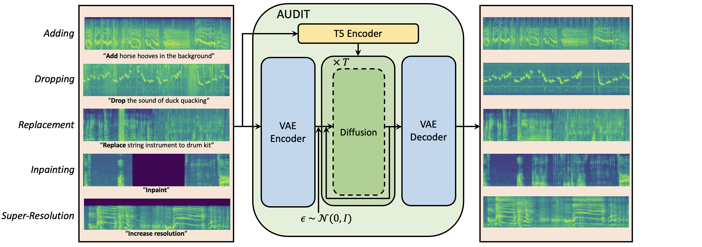

AUDIT:
Audio Editing by Following Instructions with Latent Diffusion Models
[Paper]Yuancheng Wang, Zeqian Ju, Xu Tan, Lei He, Zhizheng Wu, Jiang Bian, Sheng Zhao
Abstract.
Audio editing is applicable for various purposes, such as adding background sound effects, replacing a musical instrument, and repairing damaged audio. Recently, some diffusion-based methods achieved zero-shot audio editing by using a diffusion and denoising process conditioned on the text description of the output audio. However, these methods still have some problems:
1) they have not been trained on editing tasks and cannot ensure good editing effects; 2) they can erroneously modify audio segments that do not require editing; 3) they need a complete description of the output audio, which is not always available or necessary in practical scenarios. In this work, we propose AUDIT, an instruction-guided audio editing model based on latent diffusion models.
Specifically, AUDIT has three main design features: 1) we construct triplet training data (instruction, input audio, output audio) for different audio editing tasks and train a diffusion model using instruction and input (to be edited) audio as conditions and generating output (edited) audio; 2) it can automatically learn to only modify segments that need to be edited by comparing the difference between the input and output audio; 3) it only needs edit instructions instead of full target audio descriptions as text input. AUDIT achieves state-of-the-art results in both objective and subjective metrics for several audio editing tasks (e.g., adding, dropping, replacement, inpainting, super-resolution).
This research is done in alignment with Microsoft's responsible AI principles.
Overview

AUDIT consists of a VAE, a T5 text encoder, and a diffusion network, and accepts the mel-spectrogram of the input audio and the edit instructions as conditional inputs and generates the edited audio as output.
Samples for Different Audio Editing Tasks
| Instruction | Input Audio | Output Audio |
|---|---|---|
| Add a car horn honks several times loudly | ||
| Drop the sound of a woman talking | ||
| Replace laughter to trumpet | ||
| Inpaint | ||
| Perform Super-resolution |
More Samples for Adding
The adding task is to add another sound event to the input audio. For instance, transforming an input audio with the caption "A baby is crying" into an output audio with the semantic information "A baby is crying while thundering in the background." It is important to note that the adding task should not only ensure that the generated output audio contains both the semantic content of the input audio and the newly added semantic content, but also that the content of the input audio should remain as unchanged as possible in the output audio.
| Text | Input Audio | SDEdit (N=1/2T) | SDEdit (N=1/4T) | Ours |
|---|---|---|---|---|
| Add clip-clop of horse hooves | ||||
| Add a motorboat speeding in the background | ||||
| Add the sound of knocking in the middle | ||||
| Add a bell in the beginning | ||||
| Add a short sound of hi-hat in the end |
More Samples for Dropping
The dropping task aims to remove one or more sound events from the input audio. For example, removing the sound event "dog barking" from an input audio with the caption "A man giving a speech while a dog barking" to an output audio with the semantic description "A man giving a speech".
| Text | Input Audio | SDEdit (N=1/2T) | SDEdit (N=1/4T) | Ours |
|---|---|---|---|---|
| Drop the sound of a duck quacking in water | ||||
| Drop the sound of dishes and pots and pans in the middle | ||||
| Drop: pouring water | ||||
| Drop people cheering | ||||
| Drop a short firework explosion in the end |
More Samples for Replacement
The replacement task aims to substitute one sound event in an input audio with another sound event. For example, replacing the sound event "bell ringing" with "fireworks" in an audio with the caption "the sound of gun shooting and bell ringing" results an output audio with the semantic description "the sound of gun shooting and bell ringing and fireworks".
| Text | Input Audio | SDEdit (N=1/2T) | SDEdit (N=1/4T) | Ours |
|---|---|---|---|---|
| Replace: wind instrument to drum kit | ||||
| Replace dropping coin with the sound of something tearing | ||||
| Replace the sound of squeak to the sound of clapping | ||||
| Replace clink with fart | ||||
| Replace a people yelling to insects buzzing |
More Samples for Inpainting
The audio inpainting task is to complete a masked segment of an audio based on the context or provided textual description. SDEdit-Rough and SDEdit-Precise are two baseline methods, you can check more details in our paper.
| Text | Input Audio | SDEdit-Rough | SDEdit-Precise | Ours |
|---|---|---|---|---|
| A toilet flushing. | ||||
| A group of people are laughing | ||||
| A person repidly types on a keyboard | ||||
| A sudden horn | ||||
| A baby cries followed by rustling and heavy breathing |
More Samples for Super-Resolution
The audio super-resolution task can be viewed as completing the high-frequency information of a low-sampled input audio (converting the low-sampled input audio into a high-sampled output audio).
| Text | Input Audio | SDEdit | SDEdit-Precise | Ours |
|---|---|---|---|---|
| A baby cries and a young girl speaks briefly | ||||
| A car is shifting gears | ||||
| Insects buzzing followed by rattling and rustling | ||||
| Gunfire sounds | ||||
| Continuous crinkling in a quiet environment |
Text-to-Audio Generation
Since we compare with generative model-based audio editing baseline methods, we also train a text-to-audio latent diffusion model. Our model achieves the best performance in three objective metrics, FD, KL, and IS. Compared to the previously best-performing model (AudioLDM), our model reduces FD by 3.12 (23.31 to 20.19), KL by 0.27 (1.59 to 1.32), and increases IS by 1.10 (8.13 to 9.23). This demonstrates that our generation model can serve as a strong baseline model for generation-based editing methods.
| Text | Our Text-to-Audio Model |
|---|---|
| Jazz music | |
| A person snoring | |
| Someone typing on a computer | |
| Train passing and a short honk | |
| Birds singing while ocean waves crashing | |
| Wind blows and insects buzz while birds chirp | |
| A woman giving a speech while group of people applauding in the end |